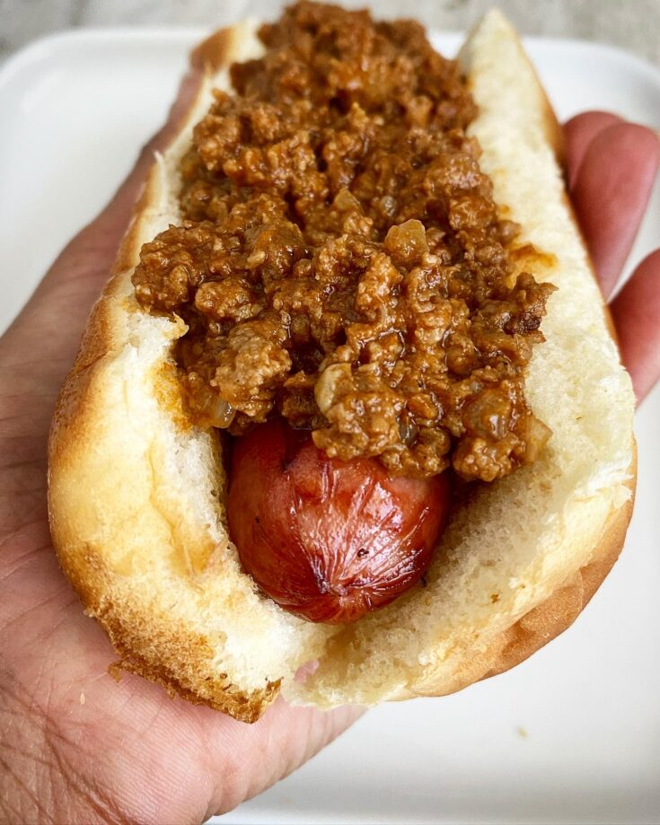

Hot-Dog Chili Recipe!

You ever hold your hot dog and realize it could use a kick? Well look no further than the classic chili! Once you try this out you'll be wondering how you've had hot dogs without chili before. This recipe is designed to bring you back to as a kid wanting to eat that same special hot dog that Sonic the Hedgehog seemed to keep talking about. Just plop this on your favorite sausage and enjoy!
INGREDIENTS:
1 pound ground beef
1/3 cup water
5 ounces tomato sauce
1/2 cup ketchup
2 1/2 teaspoons chili powder
1/2 teaspoon salt
1/2 teaspoon ground black pepper
1/2 teaspoon white sugar, or to taste
1/2 teaspoon onion powder
1 dash Worcestershire sauce
STEPS:
- Place ground beef and water in a large saucepan; use a potato masher to break apart beef.
- Stir in tomato sauce, ketchup, chili powder, salt, black pepper, sugar, onion powder, and Worcestershire sauce.
- Bring to a boil, then simmer over medium heat until beef is cooked and chili thickens, about 20 minutes.
- Top your already-cooked hot dog and enjoy!